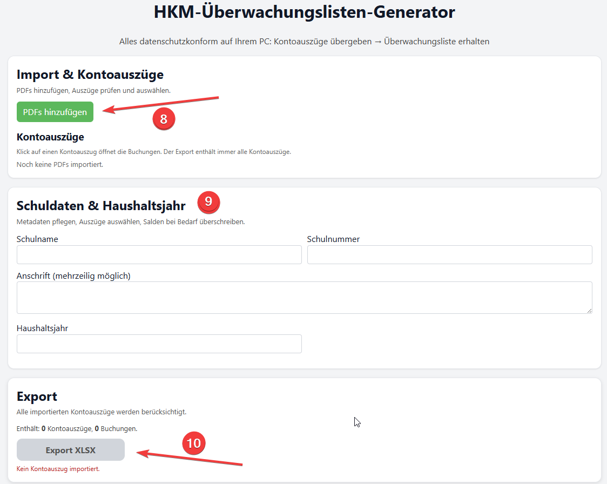
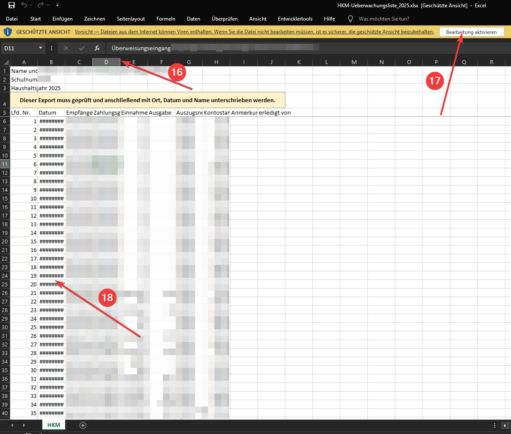
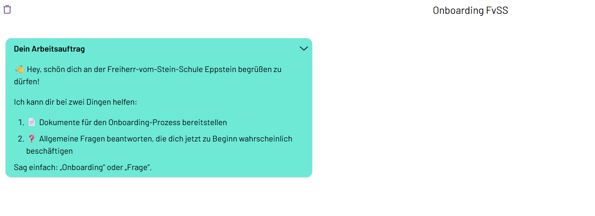
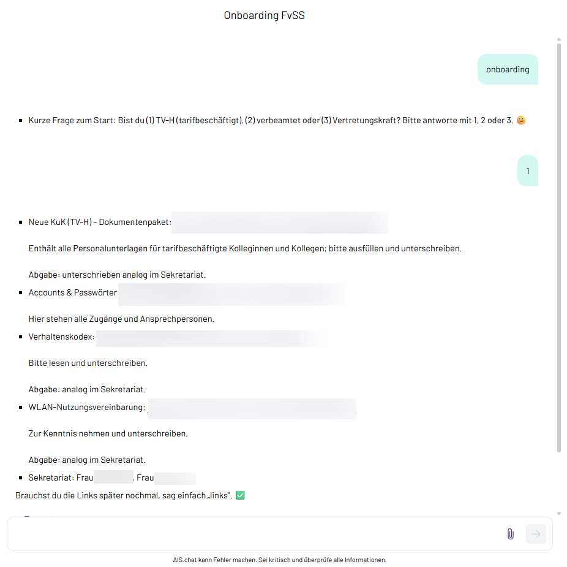

Diese Seite gibt einen Überblick über meine Arbeit im Medienbereich: Kursarchitektur in Moodle, Einsatz von KI-Werkzeugen im Unterricht, eigene interaktive Lernmedien sowie Werkzeuge für Verwaltung und Planung, Durchführung und Reflexion meines Unterrichts.
Moodle-Kursarchitektur
Meine Kurse sind keine Materialablagen, sondern Lernumgebungen mit eigener Ablauflogik und dienen jeweils einem ganz bestimmten Zweck.
Hub-Struktur als Einstieg
Jede Übungsphase beginnt auf einer Übersichtsseite, die ich als universelles Textfeld mit eigenem HTML aufbaue: ein Kachelgitter, das die Teilbereiche zeigt und in den Kurs hinein verzweigt. Der Kursraum bleibt dadurch auch bei vielen Aktivitäten überschaubar — Lernende sehen eine Übersicht statt einer Liste.
Freischaltung als diagnostische Ebene
Der Zugang zur nächsten Stufe läuft i.d.R. über kurze Markierung der bearbeiteten Aktivität. Zum Übungsschluss oder ggf. zwischendurch nutze ich Quizze – sie dienen nicht der Bewertung, sondern der Diagnose: Die Konfiguration ist bewusst so gewählt, dass Wiederholen der Normalfall ist und niemand an einer Hürde stehen bleibt, aber dennoch kein einfaches "try & error" nicht ohne Weiteres möglich ist.
Standardkonfiguration der Freischalt-Quizze
| Fragenpool | 7–8 Fragen je Teilbereich |
|---|---|
| Angezeigt | 4 Fragen, zufällig gezogen |
| Versuche | unbegrenzt |
| Bestehensgrenze | 75 % |
| Antwortreihenfolge | durchgehend gemischt |
| Fragetypen | numerisch, Multiple Choice, Wahr/Falsch, Kurzantwort |
Abschlussverfolgung als Steuerung
Aktivitätsabschluss und Abschlussverfolgung sind sehr wichtig für meine Übungsphasen: Sie erzeugen die Reihenfolge, geben Lernenden eine sichtbare Fortschrittsanzeige und mir eine Übersicht, an welcher Stelle eine Lerngruppe hängt.
Unbegrenzte Versuche bei gleichzeitig hoher Bestehensgrenze und randomisierten Fragen aus einem Pool, trennen Diagnose von Leistungsbewertung.
Belege zur Kursführung
Zweites Format: der Hub als Anker einer Projektwoche
Eine ähnliche Bauweise trägt auch ein ganz anderes Format — die Lernexpedition, die Verfolgung einer interessensbasierten Leitfrage über eine Woche in Klasse 9/10. Der Moodle-Hub war der zentrale Anlaufpunkt der gesamten Woche: Auftrag, Materialien, Zwischenstände und Abgabe an einer Stelle.
Ich gehe in der Annahme, dass meine moodle-Handhabung in der Schule eine gänzlich andere ist, als bei Selbstlernkursen in der Erwachsenenbildung: Meine moodle-Nutzung hat einen Hybrid-Charakter, wobei die Selbstlernkurse alleine auskommen müssen. Daher antizipiere ich, dass ich in meiner Arbeit für Sie eher Aktivitäten wie "Lektion" einsetze und die Verzweigungen so setze und anreichere (h5p etc.), dass es dem Selbstlernen in der Erwachsenenbildung gerecht wird.
KI-Integration im Unterricht
Der Einsatz von KI im Unterricht ist nicht per se gut – er muss wohl überlegt und vorbereitet sein.
Einbettung in den Kursraum
Die Lernszenarien binde ich direkt in den Kursraum ein, statt sie zu verlinken. Die Lernenden klicken den Bot an und können sofort loslegen.
Systemprompt und Wissensbasis
Der eigentliche Aufwand liegt in der Konfiguration: Rollenbeschreibung, Gesprächsführung, zulässige Hilfestufen und die hinterlegte Wissensbasis entscheiden, ob ein Bot zum Denken anregt, Lösungen ausgibt oder mehr oder weniger deterministisch agiert.
Grenzen in Chemie, Mathematik und Physik
Ohne Werkzeugzugriff (Python usw.) lässt sich ein Chatbot nicht zu deterministischen Ausgaben zwingen. In der Mathematik wiegt das besonders schwer: Ein falsches Ergebnis wird sprachlich genauso souverän vorgetragen wie ein richtiges, und die Lernenden haben in der Erarbeitungsphase noch keine Kompetenz, mit der sie über KI-Ausgaben urteilen könnten.
Hinzu kamen Beschränkungen der Oberfläche: Systemprompts waren bis vor Kurzem auf 400 Zeichen begrenzt, mathematische Ausdrücke wurden nicht korrekt dargestellt (inzwischen wird korrekt gerendert). Mein bisheriger workaround: Alle von den SuS zu bearbeitenden Aufgaben hinterlege ich mit Lösung als Wissensbasis (generiert durch mein Unterrichtsarchiv, s. Abschnitt 5). Daraufhin zwang ich über den Systemprompt zur ausschließlichen Referenzierung bzgl. der Wissensbasis.
In meinen Fächern setze ich Chatbots begleitend zur Unterstützung ein, aber gerade diese benötigen eine besonders genaue Konfiguration. Angenehmer ist es, sie dort einzusetzen, wo der Umgang mit KI selbst der Gegenstand ist: Die Lernenden müssen die Fachinhalte bereits beurteilen können und nutzen den Bot, um ihre eigenen Ergebnisse zu ordnen, zu strukturieren und zu überdenken. Damit wird die Unzuverlässigkeit des Werkzeugs vom Risiko zum Lerngegenstand.
Interaktive Lernmedien
Direkt bedienbarWo verfügbare Simulationen nicht zum didaktischen Weg passen, generiere und kuratiere ich eigene. Die folgende Simulation möchte ich Ihnen vorstellen — sie lässt sich hier im Browser bedienen.
Eigenschaften und Bindungstyp — Chemie, Jahrgang 9
Die Lernenden prüfen sechs Alltagsstoffe an drei Messstationen, ordnen sie anschließend selbst nach der Ähnlichkeit ihrer Messwerte und bekommen erst danach das passende Teilchenmodell und den Fachbegriff. MAn könnte nahezu von induktiver Vorgehensweise sprechen.
Entscheidend ist, was die Simulation nicht macht: Sie sagt beim Ordnen nicht „richtig“ oder „falsch“. Wenn eine Gruppe in sich widersprüchlich ist, wird die betroffene Messspalte markiert und eine Frage gestellt. Die Entscheidung bleibt bei den Lernenden.
Technische Anlage
- Eine einzelne HTML-Datei, vollständig offline lauffähig
- Keine Bibliotheken, keine Schriftnachladung, kein Build-Schritt — alle Grafiken sind als SVG im Dokument erzeugt
- Auf iPad im Querformat ausgelegt: Bedienung durch Antippen statt Ziehen, Tippziele mindestens 44 px, kein Scrollen in keiner Phase
- Keine Datenspeicherung, keine Netzwerkzugriffe, keine Anmeldung
Für Tablet und Desktop ausgelegt. Auf diesem Bildschirm wird sie in einem eigenen Tab besser bedienbar.
Simulation öffnenIn der Druckfassung nicht darstellbar. Direkt aufrufbar unter: https://mrhey111.github.io/unterricht-sims/ch-09-r4-bindungstypen/
Werkzeugentwicklung
Verwaltungsaufgaben und organisatorische Abläufe lassen sich häufiger automatisieren oder zumindest digital vereinfachen. Zwei Werkzeuge hierzu, die ich zuletzt erstellt habe, möchte ich Ihnen vorstellen.
Überwachungslistenexporter
Für die vom Hessischen Kultusministerium geforderte Überwachungsliste des Klassenkontos erzeugt mein Programm die fertige XLSX-Datei unmittelbar aus den Kontoauszügen. Die Aufgabe fällt einmal im Jahr an, ist aber unangenehm und langwierig.
Das Programm läuft lokal auf dem Privatrechner der Lehrkraft und nutzt keine Online-Dienste. Die Kontodaten verlassen das Gerät nicht — die Voraussetzung dafür, dass es überhaupt eingesetzt werden kann.
Als Nachweis finden Sie unten die Anleitung, die ich seinerzeit für das Kollegium erstellt habe. Das Programm selbst gebe ich nicht weiter, da der Parser ausschließlich auf die Kontoauszüge unserer Sparkasse abgestimmt ist.


Bebilderte Handreichung für das Kollegium, 7 Seiten (PDF, 372 KB) — Auszug ohne die schulinternen Bezugsquellen.
Technisch ist der Exporter eine in TypeScript und React geschriebene Webanwendung, die nicht im Netz liegt: Eine Startdatei öffnet einen Server ausschließlich auf dem eigenen Rechner, die Anwendung läuft dann im Browser wie eine gewöhnliche Desktop-Software.
Die Kontoauszüge werden direkt im Browser gelesen; hinterlegte Erkennungsprofile trennen Buchungen von Anfangs- und Endsalden, wobei ein Profil auf unsere Sparkasse zugeschnitten ist und ein allgemeineres als Rückfallebene dient. Die fertige Liste entsteht aus einer eingebetteten Vorlage im Originalformat des Kultusministeriums.
Zwischenstände liegen AES-verschlüsselt in der lokalen Datenbank des Browsers. Es gibt keine Serverkomponente und keinen Netzwerkzugriff — die Kontodaten können das Gerät technisch gar nicht verlassen.
Onboarding-Chatbot
Wiederkehrende organisatorische Fragen beim Dienstantritt — Zugänge, Unterlagen, Abgabewege — habe ich an einen Chatbot ausgelagert, statt sie einzeln zu beantworten. Er lief im Schuljahr 2025/26 für neu eintretende Kolleginnen und Kollegen und ist seit der Umstellung der verlinkten Nextcloud-Struktur außer Betrieb.
Der Bot leistet zweierlei: Er verweist auf die im Nextcloud abgelegten Onboarding-Unterlagen und beantwortet die typischen Fragen zum Dienstantritt, mit denen er vorab bestückt ist. Weil die benötigten Unterlagen vom Beschäftigungsverhältnis abhängen, klärt er das zuerst und stellt danach nur die tatsächlich passenden Dokumente zusammen.


Unterrichtsarchiv und systematische Iteration
Ich verstehe meinen Unterricht als Iterationsprozess, der nie abgeschlossen ist. Damit aus einzelnen Durchläufen tatsächlich Verbesserung wird und nicht nur Erinnerung, braucht es eine Struktur, die den Kontext festhält.
Aufbau des Archivs
- Reine Markdown-Dateien mit YAML-Frontmatter — jede Einheit trägt ihre Metadaten maschinenlesbar bei sich
- Querverweise als Wiki-Links, dadurch ein navigierbares Netz statt isolierter Dateien
- Klare Trennung zwischen Planung und Durchführung: das geplante Konzept bleibt unverändert, jeder Durchlauf wird getrennt davon erfasst
- Reflexionen zum Durchlauf gehören fest dazu — sie sind der Punkt, an dem der nächste Durchgang ansetzt
- Eine zentrale Schemadatei als verbindliche Referenz für Ordnerstruktur, Benennung und Pflichtfelder, dazu eine automatisierte Prüfung, die Abweichungen meldet
Warum KI hier ansetzt
Die Systematisierung dieses Iterationsprozesses übernehme ich mit KI-Unterstützung. Deren eigentliche Schwäche bei der Erstellung von Unterrichtsmaterial ist nicht das Formulieren, sondern der fehlende Kontext: Ein Sprachmodell weiß nicht, was in dieser Lerngruppe bereits gelaufen ist, welche Begriffe eingeführt sind und woran es beim letzten Mal gehakt hat.
Genau dieser Kontext ist in meinem Archiv lerngruppenbezogen abrufbar. Das Archiv ist damit weniger Ablage als Arbeitsgrundlage — es macht den Unterschied zwischen Material, das allgemein passt, und Material, das für diese Gruppe passt.
Ordnerlogik, Dokumenttypen, Schema und automatisierte Prüfung, Skill-Kette und Abhängigkeiten — fünfzehn Abschnitte, in sich geschlossen. Zum Lesen am Stück, oder zur Übergabe an einen Chatbot Ihrer Wahl, wenn Sie lieber gezielt nachfragen möchten.
Gamification-Prototyp
Direkt spielbar„Aequoria und die Große Waage“ überträgt lineare Gleichungen in eine Spielstruktur: Das Lösen einer Gleichung ist nicht Beiwerk, sondern die Bedingung für den Fortschritt.
Die Waage als durchgängiges Modell
Das Bergdorf Aequoria wird von einer großen Waage im Gleichgewicht gehalten. Malus der Ungleiche hat die Ausgleichsgewichte gestohlen — er verkörpert das häufigste Fehlkonzept beim Umformen: nur eine Seite zu bearbeiten. Die Waage ist damit nicht Dekoration, sondern das didaktische Modell der Äquivalenzumformung, das die ganze Spielhandlung trägt.
Fortschritt nur über Verstehen
Die Aufgaben sind in fünf Stufen gestaffelt, von x ± a = b bis a(x + b) = c. Ab der dritten Stufe fragt das Spiel nicht nur das Ergebnis ab, sondern den Weg: Was tust du zuerst auf beiden Seiten? Fehler lösen gestufte Hilfen aus — erst ein strategischer Impuls, dann eine konkrete Anweisung, zuletzt der gezeigte Lösungsweg mit neuen Zahlen. Raten führt nicht zum Ziel.
Warum eine Spielstruktur
Gelöste Gleichungen bringen Kristalle, mit denen die Ausrüstung verbessert wird. Der erste Gegner ist ohne diese Aufwertung nicht zu besiegen — die Rechenarbeit ist also nicht belohnt, sondern vorausgesetzt. Zugleich bleibt Feststecken unmöglich: Die Siegel sind unabhängig vom Energiestand immer lösbar.
Stand
Umgesetzt im RPG Maker MZ, Spielzeit etwa eine Doppelstunde. Der Prototyp ist vollständig durchspielbar und lief bislang nicht im Regelunterricht — er ist als Erprobung eines Formats entstanden, nicht als fertiges Unterrichtsmaterial.
Das Spiel wird über die Tastatur gesteuert und braucht einen größeren Bildschirm.
Spiel öffnenIn der Druckfassung nicht darstellbar. Direkt aufrufbar unter: https://mrhey133.github.io/aequoria/